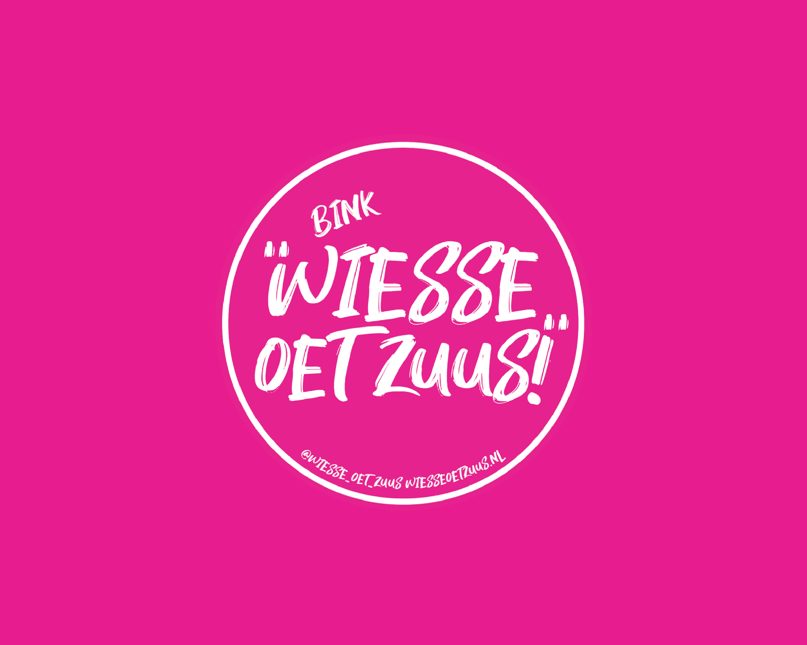
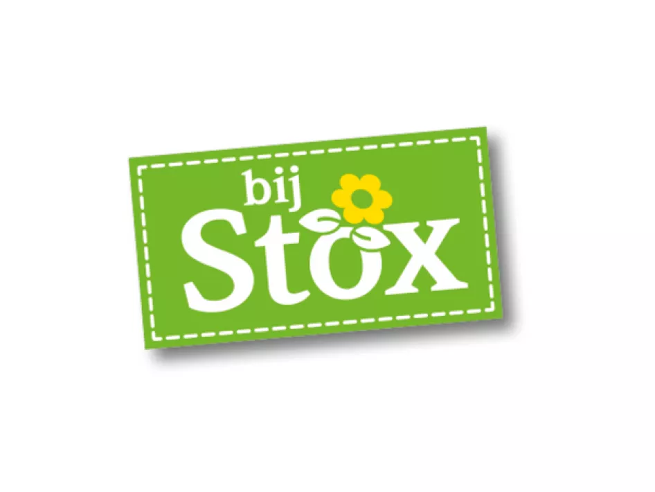
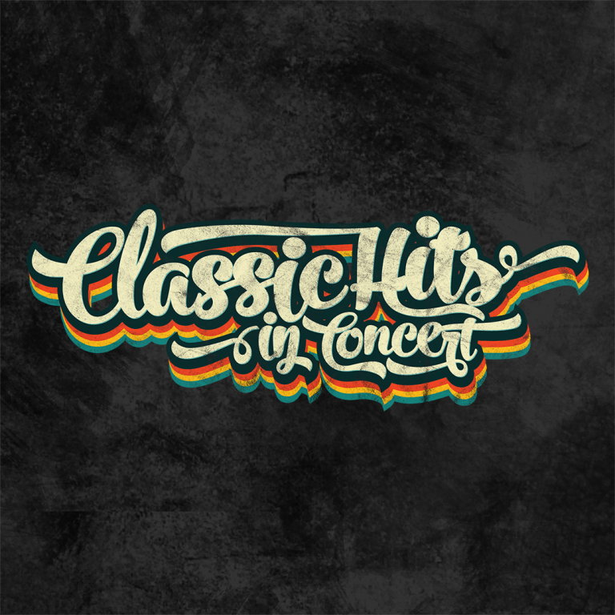
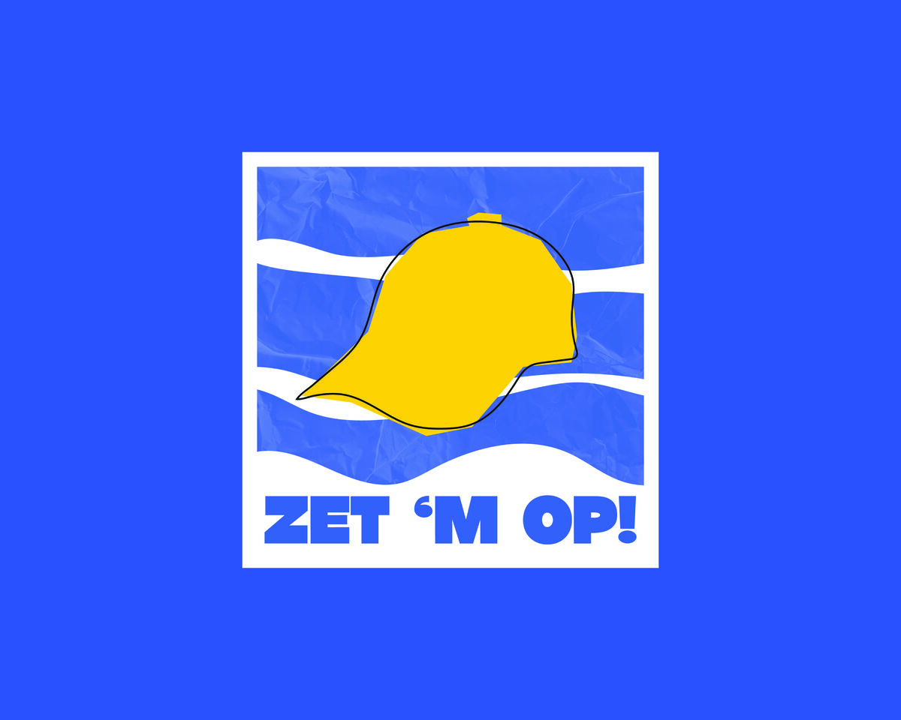

Werk · Video Marketing
Video
Marketing.
Video moet snel binnenkomen en toch iets achterlaten. Ik plan de campagne, schrijf de editbrief, monteer op ritme en kijk daarna wat er echt bleef hangen. Of het nu een aftermovie, een eventvideo of een reeks shorts is: ik zoek de versie die het moment het sterkst laat binnenkomen.
121video's Pronto Wonen
12afleveringen WOZ-serie
14vacaturevideo's BijStox
Projecten

WIESSE OET ZUUS
Linssen Yachts

BijStox

Classic Hits in Concert

ZET 'M OP!
Contentbrein

Personal Projects
01
Hoe ik aan de slag ga
Van analyse tot uitslagEen sterke video is het eind van een rij goede keuzes. Daarom begint mijn werk niet in de montage maar bij de vraag wat een campagne moet opleveren. Dit is de volgorde die ik bij elke klant aanhoud.
01
Analyseren
Ik begin bij wat er al is. Welke video's liepen goed, waar haakten mensen af en welk platform levert echt iets op? De cijfers haal ik uit Metricool en ik vertaal ze naar een paar heldere keuzes, geen rapport vol grafieken.
02
Plannen
Daarna staat het plan op papier: een contentkalender, formats per platform en per video een editbrief met hook, duur, tekst in beeld en één call-to-action. Voor de draaidag weet iedereen wat er geschoten wordt en waarom.
03
Maken
Op de set weet ik welke shots ik nodig heb, dus één draaidag levert een hele reeks op. In DaVinci Resolve monteer ik strak op ritme, met ondertitels precies op het woord en geluid dat klopt.
04
Plaatsen
Video's gaan ingepland de deur uit, met per platform een eigen caption en timing. TikTok vraagt iets anders dan Reels of Facebook, dus elke post krijgt zijn eigen versie.
05
Meten en bijsturen
Na de campagne maak ik een rapport dat je echt leest: wat werkte, wat niet en wat we de volgende ronde anders doen. Zo wordt elke campagne een stukje slimmer dan de vorige.
02
Waarom ik
De hele keten in één hand
Van de analyse tot de laatste export. Er zit geen overdracht tussen strateeg, editor en planner, dus er raakt onderweg niets kwijt.
Geordend van begin tot eind
Elke klus heeft dezelfde mappenstructuur, een editbrief als draaiboek en een log van wat er gebeurd is. Je hoeft nooit te vragen waar iets staat.
Cijfers boven gevoel
Mooi is niet genoeg. Ik kijk naar kijkduur, saves en reacties en stuur daarop bij. Een goede video is een video die zijn taak doet.
Veel uit één draaidag
Met vaste templates en eigen tools haal ik een hele reeks uit één shoot. Zo werden het 121 video's voor Pronto Wonen, verdeeld over vijf campagnes.